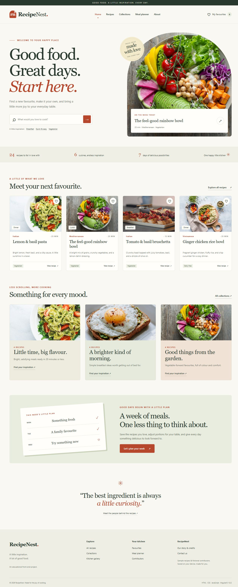
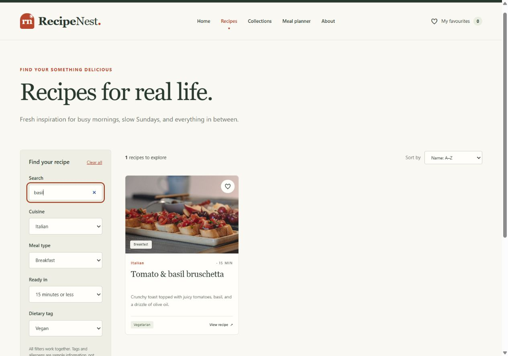
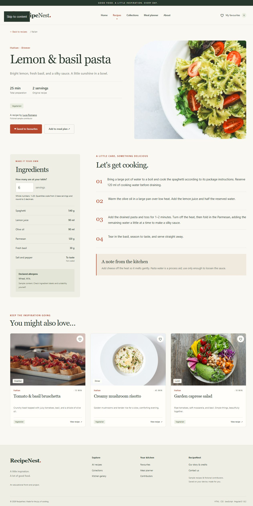
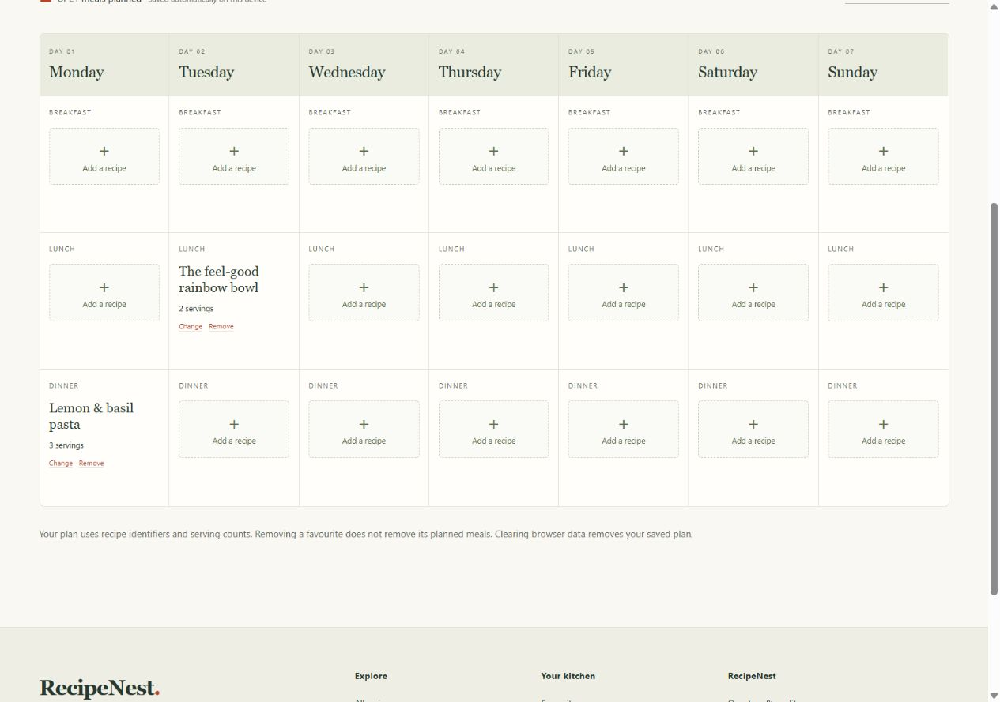
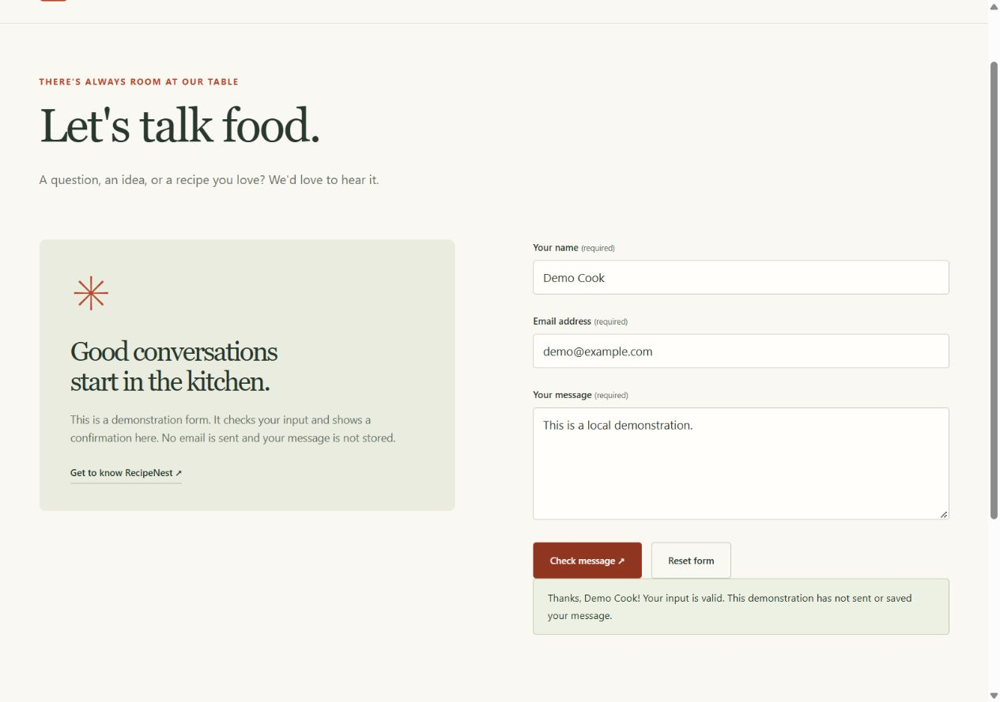
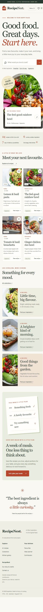
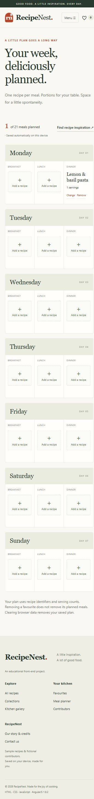

ANGULARJS WEBSITE DEVELOPMENT · 31 OCTOBER 2026
RecipeNest Project Report
A website for discovering recipes and planning meals
This report explains the implementation of the Problem Statement and Functional Requirement Specification in the RecipeNest brief, including the source code structure, algorithms, assumptions, and recorded test results. The application runs entirely in the browser, with a local static server serving the project files.
24 recipes6 cuisines33 automated tests passed360 / 768 / 1280 px1 Problem definition
Home cooks often search for recipes across multiple sources and find it difficult to keep track of favourite dishes, adjust ingredient quantities, and organise meals. RecipeNest brings these activities together in one recipe portal: discover dishes, read recipe details, choose serving counts, save favourites, and add meals to a seven-day plan.
The target users are home cooks. The dataset contains 24 sample recipes, 3 fictional contributors, and 4 collections. The website does not include sign-in, a backend database, email delivery, transactions, or online service integrations.
2 Design specifications
Visual and responsive design
The visual design uses cream, terracotta, and green, with serif headings, sans-serif body text, food image cards, and generous spacing. Desktop layouts use multiple columns, tablets use fewer columns, and mobile layouts stack content vertically with a collapsible navigation menu. The planner displays days side by side on desktop and as stacked cards on mobile.
Site navigation
Home → Recipes → Recipe detail → Calculator / Favourite / Planner Home → Collections → Recipe detail Footer → Contributors → Contributor detail → Associated recipes Footer → Gallery → Preview / Recipe detail Header → Favourites / Planner / About Footer → Contact
AngularJS architecture
| Layer | Responsibility |
|---|---|
| Module recipeNest | Depends on ngRoute; routes use hashbang #! for refreshable static deep links. |
| Catalogue service | Loads data/recipes.json, finds recipes by stable ID, keeps filters during detail navigation. |
| SavedData service | Shares favourites and plan across views, validates loaded data, handles persistence and warnings. |
| BrowserStorage adapter | Delegates getItem/setItem to Local Storage; injectable for failure tests. |
| Controllers | Shell, Home, Catalogue, Detail, Favourites, Collections, Profile, Planner, Gallery, Contact. |
| Directives | recipeCard reuses card template; modalKeys handles Escape, focus trap, gallery arrows. |
| Pure logic | Named functions with parameters and return values for validation, scaling, searching, cleaning and totals. |
Data model
Recipe { id, name, cuisine, meal, minutes, servings, tags[], allergens[],
contributorId, description, ingredients[], steps[], notes, keywords[],
image, imageAlt, imageCredit, imageSource }
Ingredient { name, quantity, unit, scalable, note? }
Contributor { id, name, firstName, initials, colour, speciality,
background, bio, interests[] }
Collection { id, name, description, recipeIds[], image }
Favourites = unique array of valid Recipe IDs
Plan = { "0-Breakfast": {recipeId, servings}, ... "6-Dinner": ... }
Assumptions and boundaries
Serving counts must be whole numbers from 1 to 20. Calculating new quantities does not change the original recipe. Units are preserved and quantities are rounded to two decimal places; ingredients added to taste are not scaled. Countable ingredients may produce fractional quantities, which represent mathematical estimates. The total cooking time is an estimate for the dish and is not automatically multiplied by the serving count.
The planner contains 21 slots in a sample Monday–Sunday week. Each slot holds one recipe ID and a serving count. Removing a favourite does not remove its planned meals. Local Storage stores only recipe IDs and serving counts; contact messages are not stored. Sample data does not guarantee dietary suitability, and illustrative images may not show the exact dish.
3 Functional requirement mapping
| No | Requirement | Implemented behaviour | Location |
|---|---|---|---|
| 01 | Home | Brand identity, search, featured recipes, collections, and an introduction to the planning tools | home.html |
| 02 | Catalogue | 24 records, ng-repeat, responsive cards, and stable IDs | catalogue.html, card.html, recipes.json |
| 03 | Search filtering sorting | Case-insensitive keyword search, four filters combined with AND, A–Z/Z–A sorting, result count, clear action, no-results state, and retained filters | CatalogueController, RecipeLogic.filterRecipes |
| 04 | Recipe details | Metadata, ingredients, cooking steps, notes, sample tags/allergens, related recipes, favourites, and planner integration | detail.html, DetailController |
| 05 | Contributors | Three fictional profiles with background information, interests, biographies, and ID-based recipe links | contributors.html, profile.html |
| 06 | Gallery | Images, alternative text, captions, credits, previews, previous/next controls, keyboard navigation, and focus management | gallery.html, GalleryController, modalKeys |
| 07 | Calculator | Whole-number input from 1 to 20, proportional scaling, non-scalable ingredients, rounding, and preservation of the original data | RecipeLogic.scaleIngredients, detail.html |
| 08 | Collections | Four collections with data binding and links to recipe details | collections.html, recipes.json |
| 09 | Favourites | Unique IDs, Local Storage, restoration, removal, empty states, and warnings | SavedData, favourites.html |
| 10 | About | Purpose, workflow, assumptions, sample content, and credits | about.html |
| 11 | Contact | Required name, email, and message fields; email format validation; field-level errors; local demo confirmation; and reset | contact.html, ContactController |
| 12 | Navigation | Header/footer, active section, back link, menu mobile, focus, hash deep links | index.html, route config, styles.css |
| 13 | Planner | Seven days × three meals, add/change/remove actions, serving counts, meal counting through iteration, and restoration | planner.html, PlannerController, SavedData |
| 14 | Programming logic | Module/controllers/services/directives, arrays/objects/functions, pseudocode, flowcharts, tests | js/, tests/, and this report |
4 Pseudocode and flowcharts
Selection statements check conditions; iteration traverses recipes, ingredients, and meal slots; arrays hold lists; and objects represent records. Functions do not modify the original dataset. User input is displayed as text through AngularJS interpolation.
Serving quantity calculator
FUNCTION validServings(n)
RETURN n is NUMBER AND integer AND 1 <= n <= 20
FUNCTION scaleIngredients(recipe, requested)
IF NOT validServings(requested) THEN return validation error
result = empty ARRAY
FOR EACH ingredient IN recipe.ingredients
copy = new OBJECT copied from ingredient
IF ingredient.scalable != FALSE
copy.quantity = ROUND(ingredient.quantity * requested / recipe.servings, 2)
ELSE keep original quantity and non-scalable note
APPEND copy TO result
RETURN result
// Original recipe and its ingredient objects are not modified.
Search filtering and sorting
FUNCTION filterRecipes(recipes, filters)
query = LOWERCASE(TRIM(filters.query))
matches = empty ARRAY
FOR EACH recipe IN recipes
keywordMatch = query appears in LOWERCASE(name + description + keywords)
IF keywordMatch AND cuisineMatch AND mealMatch AND timeMatch AND dietMatch
APPEND recipe TO matches
SORT a copied matches array by A-Z, Z-A, or total minutes
RETURN matches
// An empty filter matches all values. Time uses <=. No matches yields [].
Contact form validation
ON CONTACT SUBMIT
mark form submitted
IF name blank OR email blank/invalid OR message blank
show errors for invalid fields
do not confirm
ELSE show a local demonstration confirmation
// Do not send or save contact details.
ON RESET
clear fields and confirmation
set form pristine and untouched
Personal planner and persistence
ON STARTUP
TRY parse Local Storage JSON; CATCH -> warn, use defaults
remove duplicate/unknown favourite IDs
FOR EACH stored meal slot
IF slot is valid AND recipe exists AND servings is integer 1..20
retain a new {recipeId, servings} record
ON SAVE SLOT(key, recipeId, servings)
IF invalid slot/recipe/servings THEN report error, keep existing plan
ELSE plan[key] = {recipeId, servings}
TRY save JSON; CATCH -> show memory-only warning
ON REMOVE SLOT(key)
delete plan[key]; attempt save
FUNCTION countMeals(plan)
total = 0
FOR EACH own key IN plan: total = total + 1
RETURN total
5 Test cases and actual results
Historical test results from 31 October 2026 are retained as reference. They predate this edition. Run tests/browser.html through Live Server for current browser checks.
| Test | Input | Expected | Actual |
|---|---|---|---|
| Calculator: 1 serving | 180 g / 2 × 1 | 90 g | Passed: UI + unit tests |
| Calculator: 6 servings | 180 g / 2 × 6 | 540 g | Passed: UI + unit tests |
| Calculator: 20 servings | 180 g / 2 × 20 | 1800 g | Passed: UI + unit tests |
| Calculator invalid | 0, 21, 1.5, blank | Show an error and hide the calculated quantities | Passed: UI + unit tests |
| Rounding | 1 tsp / 3 × 2 | 0.67 tsp | Passed: unit tests |
| Non-scalable | Salt to taste, 20 servings | Preserve the To taste note | Passed: UI + unit tests |
| Combined filters | basil + Italian + Breakfast + 15 min + Vegan | 1 bruschetta | Passed: UI + unit tests |
| No results | nothing-xyz-999 | Empty message + clear action | Passed: UI checks |
| Filter persistence | Open recipe details, then go back | Retain all filters | Passed: UI checks |
| Favourites persistence | Save, then reload | Restore one recipe ID | Passed: UI + service tests |
| Duplicate / unknown ID | Duplicate ID + unknown ID | Retain only unique valid IDs | Passed: unit + service tests |
| Planner persistence | Save two slots, then reload | Restore two meals with the correct serving counts | Passed: UI + service tests |
| Planner edit / remove | Change servings from 3 to 1; remove the second meal | One meal, one serving | Passed: UI + service tests |
| Unsave planned recipe | Remove a planned recipe from favourites | Keep the planned meal; favourites become empty | Passed: UI + unit tests |
| Malformed JSON / storage denied | Malformed JSON / mocked getItem and setItem throw errors | Show a warning and use in-memory state | Passed: service tests |
| Contact invalid / valid | Blank fields, bad-email, then valid input | Field-level errors, then local demo confirmation | Passed: UI checks |
| Contact reset | Reset after successful validation | Clear the fields and reset the form state | Passed: UI checks |
| Gallery keyboard | Next, ArrowRight, Escape | Switch images, close the preview, and restore focus | Passed: UI checks |
| Responsive | 11 routes × 360/768/1280 px | No horizontal overflow or broken images | Passed: DOM measurements |
| Second desktop browser | Complete UI test suite | Record the browser version and results | Not yet performed |
| Video demonstration | Follow the 5–7-minute demo script | A video demonstrating the features | Not yet recorded; script provided |
All 11 routes were measured at widths of 360, 768, and 1280 px, with no horizontal overflow. Content widths were 345, 753, and 1265 px respectively because of the vertical scrollbar. Individual measurement results are available in viewport-checks.json; the full description is provided in TEST-RESULTS.md.
Full testing has not yet been completed in a second independent desktop browser, on a physical mobile device, or with a screen reader. The demo video has not yet been recorded. These items are not marked as passed. Testing guidance and a recording script are included in the ZIP package.
6 Application screenshots
These screenshots were captured from the application running through HTTP. The meal-plan entries shown are test data from the verification session, rather than default data supplied to users.







7 Prerequisites and startup
Open the project folder in VS Code. Install Live Server by Ritwick Dey, then right-click index.html and select Open with Live Server. The application uses only browser JavaScript, local JSON and HTML templates. No application backend is required.
Use the address opened by Live Server, usually http://127.0.0.1:5500. Do not open index.html through file://. Open tests/browser.html through Live Server to run browser checks.
Reset browser data
Delete the two keys recipenest.favourites.v1 and recipenest.plan.v1 from DevTools → Application/Storage → Local Storage for the project origin, then reload the page. Alternatively, use the browser’s option to clear site data. Different addresses or ports use separate storage areas.
8 Assets dependencies and handover
Images are provided by Unsplash and stored in assets/images. Detailed image sources are listed in assets/CREDITS.md. Images illustrate dish types or ingredients, and some images are reused. AngularJS/route 1.8.2 was obtained from the AngularJS distribution site and is included with its MIT licence. The interface and favicon were created for this project. All contributors are fictional.
The submission package includes HTML/CSS/JavaScript/AngularJS source code, templates, JSON data, local images, libraries, a startup script, test source code, this report, test results, screenshots, and a demo script. It also contains a Vietnamese README.md and an RTF-format ReadMe.doc that can be opened in Word. The submitter must record the video using DEMO-GUIDE.md. Hosting is optional and is not included in this local ZIP package.